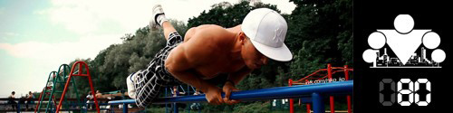
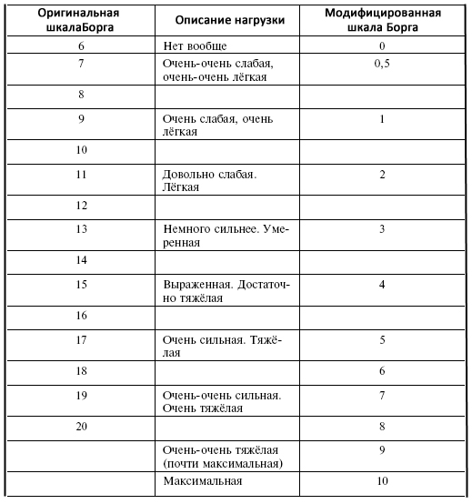

<==== Вернуться к оглавлению

Сегодня мы начинаем небольшую серию из 2-х постов, посвященных определению величины нагрузки на тренировки. В первом посте мы поговорим о внутренних характеристиках нагрузки (субъективные ощущения и ЧСС) , а во втором о внешних (интенсивность тренировки и тренировочный объём). На наш взгляд, понимание этой темы важно для того, чтобы после окончания программы участники могли успешно самостоятельно разрабатывать свои программы тренировок.
В общем смысле величина нагрузки - это комплексный показатель, который учитывает такие факторы, как количество подходов и повторений, количество упражнений на одну группу мышц, скорость выполнения повторений, время отдыха между подходами и т.д.
Шкала Борга
Одним из способов оценки величины нагрузки является шкала индивидуального восприятия нагрузки Борга. Она основывается на субъективном восприятии, которые человек испытывает во время нагрузки.
В шкале Борга 20 делений, от 0 (полное отсутствие нагрузки) до 20 (максимальная, практически запредельная нагрузка):

При оценке своего состояния следует делать это в комплексе, определяя общую нагрузку, а не отдельные факторы (например затруднение дыхания или боль в мышцах).
Что касается сложности выполнения кругов в нашей программе, то, если использовать модифицированную шкалу, нагрузка должна быть на уровне 3-4, то есть она должна быть выраженная, но не слишком тяжелая. Потому что если вам слишком легко делать круги, то прогресс будет медленнее, чем он мог бы быть, а если слишком тяжело, то вы не будете успевать восстанавливаться за 24 часа и тренироваться каждый день.
Расчет оптимального пульса
Есть так же и более научные, физиологические, методы определения величины нагрузки. Напрямую это можно сделать с помощью измерения скорости потребления кислорода (л/мин), который можно разделить на абсолютный или относительный (% от максимального потребления кислорода). Но, поскольку, далеко не у всех и не всегда есть возможность использовать этот метод, то очень часто использую косвенные методы, основанные на существовании связи между величиной нагрузки и некоторыми физиологическими показателями.
Наверное наиболее удобным из таких показателей является частота сердечных сокращений (ЧСС). В основе определения величины тренировочной нагрузки по частоте сердечных сокращений лежит идея о том, что чем больше нагрузка, тем больше частота сердечных сокращений.
В интернете можно найти несколько разных формул для расчета оптимальной величины ЧСС для разных активностей, но, к сожалению, пока что у нас не было возможности подробнее изучить этот вопрос, поэтому предоставляем вам информацию, как она есть.
Для мужчин (формула Танака):
Максимально допустимая величина пульса: 208 - 0,7*[Возраст]
Пульс для силовых тренировок: ((208 - 0,7*[Возраст])/100)*80
Пульс для тренировок на выносливость/интервальных тренировок: ((208 - 0,7*[Возраст])/100)*75
Пульс для тренировок на рельеф/похудения: ((208 - 0,7*[Возраст])/100)*65
Пульс для разминки: ((208 - 0,7*[Возраст])/100)*55
(Источник: CLINICAL STUDY: EXERCISE TESTING
"Age-predicted maximal heart rate revisited"
Hirofumi Tanaka, PhD, Kevin D. Monahan, MS and Douglas R. Seals, PhD)
Для женщин (формула Марта Гулати):
Максимально допустимая величина пульса: 206 - 0,88*[Возраст]
Пульс для силовых тренировок: ((206 - 0,88*[Возраст])/100)*80
Пульс для тренировок на выносливость/интервальных тренировок: ((206 - 0,88*[Возраст])/100)*75
Пульс для тренировок на рельеф/похудения: ((206 - 0,88*[Возраст])/100)*65
Пульс для разминки: ((208 - 0,7*[Возраст])/100)*55
(Источник: CLINICAL STUDY: EXERCISE TESTING
"Heart Rate Response to Exercise Stress Testing in Asymptomatic Women. The St. James Women Take Heart Project"
Martha Gulati MD, MS, Leslee J. Shaw PhD, Ronald A. Thisted PhD, Henry R. Black MD, C. Noel Bairey Merz MD, and Morton F. Arnsdorf MD
Нужно помнить, что
ВСЕ формулы расчета пульса это только очень грубая оценка
ДЛЯ СТАТИСТИКИ. Люди все разные и разброс максимального пульса для одного возраста может легко достигать 50 и более ударов (210 и 160, например). Использовать оценочные формулы в тренировочном процессе
НЕЛЬЗЯ. Это не только наука, но и личный опыт. Учитесь на чужих ошибках.
======> День 81. Величина нагрузки физических упражнений (Часть II)